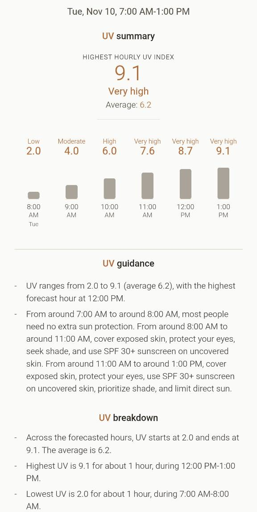
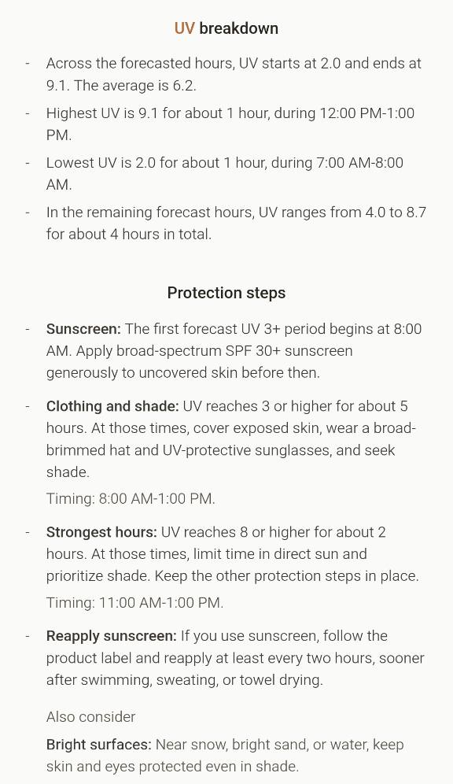

UV Scout - Planning Time Outside Around the UV Index
UV Scout
UV Scout focuses on the UV Index, with other weather variables included as supporting forecast context.
UV Scout was developed with mobile use in mind, though it can also be used in a desktop browser. The layout and interactions are designed primarily for phones.
Choose a location by searching, using the map, or selecting your device location. In UV Outlook, see how the UV Index is expected to change through the day, alongside the weather conditions. Or Plan an Outing by setting when and how long you’ll be outside. The app then gives you an outing summary based on the expected UV levels, explaining what to expect and offering practical guidance on how to respond, with the other weather conditions as context.
In practice, I also use UV Scout to get a quick overview of the current and near-term forecast for a selected location. The app brings the relevant information together in one place, where it’s easy to scan and understand at a glance.
UV Scout is still evolving and will probably keep growing through use. As I use it to plan outings and check the local forecast, I expect to notice features I wish it had. Those ideas can guide what I add next.
UV Scout is available as an Android app (there is no native iPhone app yet) or as a website for phones and desktop. Both require an internet connection to load forecast and map data. On a phone, I recommend adding the website to the Home Screen, or installing it through the browser if that option is available. It appears with the UV Scout icon and opens in its own window, so using the website on a phone feels much like using the Android app.
Idea
Summer training taught me the sunscreen lesson the hard way. More than once, I headed out without applying it and came home with a painful sunburn, promising myself I would remember next time.
One autumn day, with cooler temperatures and cloudier skies, I wondered whether sunscreen still belonged in my pre-outing routine. Until then, I mostly judged whether I needed sunscreen by the temperature and cloud cover.
So, I asked an AI agent what the UV Index was and whether I should still apply sunscreen before a run. At first, I was looking for a straightforward answer about sunscreen. The more I thought about it, the more I wanted context for the whole outing. Where would I be? What time was I going? How long did I plan to stay outside? I wanted to get practical guidance for my plans.
When we think about the weather, temperature, rain, and cloud cover often come to mind first. UV is easier to overlook because we cannot see or feel it, even though excessive exposure can harm our skin and eyes. The UV Index makes this less visible part of the weather easier to understand and helps us consider sun protection when planning an outing.
That idea grew into UV Scout, an app focused on the UV Index, with some other common local weather variables included for context. It combines the UV outlook with when and how long I plan to be outside to offer practical guidance for each outing.
You can read more about UV radiation, its effects on health, and the UV Index in the WHO fact sheet on ultraviolet radiation.
Development
The technical work behind UV Scout was handled by an AI agent. I brought the idea and guided its development, while the agent wrote code.
My contribution was shaping the idea and steering its development through many iterations. We worked especially carefully on the app’s central feature: how it interprets the UV forecast for an outing and turns it into a clear summary and practical guidance on when protection is recommended and what steps to take.
As the app took shape, I reviewed how it worked and gave feedback on whether its behavior and recommendations matched what I had in mind. I didn’t write or review the code itself, since software development isn’t my area of expertise.
Data sources
Location
To make the forecast specific to a place, UV Scout first needs its coordinates. We can choose a location in three ways:
- Search for a place: Open-Meteo’s geocoding service, which uses GeoNames place data.
- Choose a point on the map: the map uses OpenStreetMap.
- Use the device’s location: with permission.
For coordinates chosen on the map or device, BigDataCloud’s reverse-geocoding service adds a nearby place name.
Weather forecast
Once a location is selected, UV Scout requests its forecast from the Open-Meteo Forecast API. The response includes current and hourly UV Index values, along with temperature, cloud cover, precipitation, wind, and the location’s time zone. The app requests a forecast covering the next two days, so the same source can support both a look at current conditions and a near-term planned outing.
When UV Scout sends our coordinates to Open-Meteo, the API matches them to a suitable nearby forecast grid cell and returns the forecast for that area. The returned coordinates mark the cell’s centre, which may be a few kilometres from the selected point, so the forecast represents nearby conditions rather than the exact spot. Its spatial detail varies by location and forecast period: some regional models have grid spacing around 1-2 km, while global models are around 9-11 km. (Open-Meteo API documentation)
Daylight
UV Scout calculates approximate sunrise, sunset, dawn, and dusk times for the selected location and date. The calculation draws on the solar methods documented by SunCalc and NOAA’s solar calculation reference.
UV guidance
WHO provides a general reference for what UV Index levels mean and how to protect against UV exposure. Its guidance recommends sun protection when the UV Index is 3 or higher, with greater precautions at 8 and above. WHO on the UV Index and WHO on sun protection offer more detail.
UV Scout uses this guidance as a reference, then applies its own rules to the forecast and the time we plan to be outside. It tries to describe what to expect and suggest practical steps. The time-specific summary and recommendations are UV Scout’s own interpretation, not a personalized measure of someone’s exposure or health risk.
Credits
UV Scout credits its data providers where their information appears: Open-Meteo is linked next to the forecast, Open-Meteo and GeoNames beside place-search results, and OpenStreetMap contributors are acknowledged on the map. The app’s Sources section also links BigDataCloud for nearby place names, WHO for UV levels and protection guidance, NOAA and SunCalc for daylight calculations, and WMO and the U.S. National Weather Service for the simplified rain and wind guides. When we use device location, the device or browser supplies the coordinates with permission.
UV Scout outing guidance
The main idea behind UV Scout is to consider the UV forecast in the context of an outing and help us plan and prepare for it. We choose a location, a start time, and how long we plan to stay outside.
WHO guidance provides a general reference for sun protection. UV Scout builds on it by interpreting the forecast for the location, start time, and duration of a specific outing. It follows the expected UV Index across those hours, summarizes the outing’s UV levels, and shows how long we can expect to spend in each range. It then connects those periods to practical guidance: when protection is recommended, when extra care is needed, and what steps we can take. Together, the forecast and time-specific guidance show how UV conditions may change during the outing and what steps may be useful at different points.
The summary also brings in other weather variables as a context for the same location and outing. These variables offer a quick picture of the wider conditions. They add useful context alongside the UV breakdown, so we can take in the main weather information for an outing in one place.
The summary and recommendations are intended to support planning. They don’t take into account an individual’s UV exposure, their personal health risk, skin sensitivity or shade along a route, so its guidance isn’t tailored to those conditions.
An outing example in Cape Town
For a real example, we can choose Cape Town and plan six hours outside on November 8, 2026, from 7:00 AM to 1:00 PM. All times are local to Cape Town. These screenshots were captured from the live app on November 7, 2026, so the values describe the forecast available then.


Screenshots of the version of UV Scout available when this post was written. The app may have changed since then.
Across this six-hour outing, the forecast UV Index ranges from 2.0 to 8.9 and averages 6.1. It starts in the Low range, reaches Very high by the hour ending at 11:00 AM, and stays at 8 or higher from 11:00 AM to 1:00 PM.
UV Scout connects those changing levels to timed guidance. It recommends sun protection from 8:00 AM, when the UV Index first reaches 3, and extra care during the final two hours, when the UV Index is 8 or higher. The steps include applying sunscreen before the first UV 3+ period, covering exposed skin, protecting the eyes, seeking shade, and limiting direct sun during the strongest hours.
Limitations
UV Scout currently ties an outing to one selected location. That gives us a forecast for a specific point, while outdoor activities can take us across a wider area. UV and weather conditions may vary along the way, but the outing summary continues to use the location we selected. This matters most when an outing covers a longer distance or moves through different areas. In those cases, the conditions at the selected location may not represent what we encounter throughout the route.
UV exposure can also vary with the landscape along an outing. A route may pass through forest, cross open terrain, or move in and out of shade from buildings and surrounding terrain. UV Scout does not currently account for these changes. If UV Scout included a route, we might be able to use the map to estimate which sections are shaded or exposed, though the estimate would still be approximate.
Finally, UV Scout does not tailor its guidance to the type of activity. A run may involve a cap and lightweight covering clothing, while a bike ride or swim brings different clothing and equipment choices. Sunscreen may also need reapplying after swimming or heavy sweating. The app doesn’t ask what activity we plan to do, so its guidance can’t reflect these practical differences.
These limitations reflect the current version of UV Scout. As we add features and use the app in more kinds of outings, new assumptions or constraints may emerge that we will need to reconsider.
Future growth
The limitations described above point to possible directions for UV Scout’s future growth. As I continue using it to plan outings and check the local forecast, I expect to see which improvements address real needs and what other ideas emerge. I want the app to grow in response to that experience.